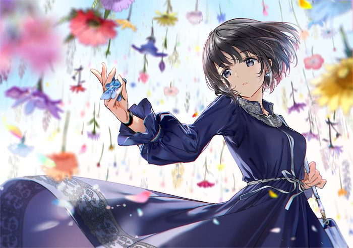

每个人都有个音乐梦不是吗。
或许哪天这里就会放有我做的歌，也许只会有一段雨声。
愿温柔的人总有音乐相伴。

现在还有多少人爱听纯音乐呢。
徐梦圆，千坂，逆时针向，N2V。
这些是我喜欢的，国内的歌手。
此外，介绍一个音乐类型：Kawaii Bass。
Kawaii Bass属于一种电子音乐流派，其是Future Bass的一个子流派，全称Kawaii Future Bass。 这种风格延续了Future Bass的一些特色，诸如自由的编排和闪烁的音色，并且融合了ACG文化，并加入了具有日本风格和二次元风格的元素，并形成了自己的风格。 通常情况下，这种风格的音乐会在常规的Future Bass的基础上添加可以凸显“kawaii要素”的一些音色；在节奏方面上，大量的使用高音打击乐的音色；而且这种风格所用的采样（Sample）一般来自与ACG文化相关的动画或游戏，而且在乐曲中常用Jazz走向的和弦。
对于这个风格似乎有争论，不过我只是引出一个音乐人罢了。
Yunomi，一个音乐风格可爱的音乐制作者。其中银河铁道的企鹅更是灵感启发自宫泽贤治创作的童话《银河铁道之夜》，清新空灵，很值得听。
以上。